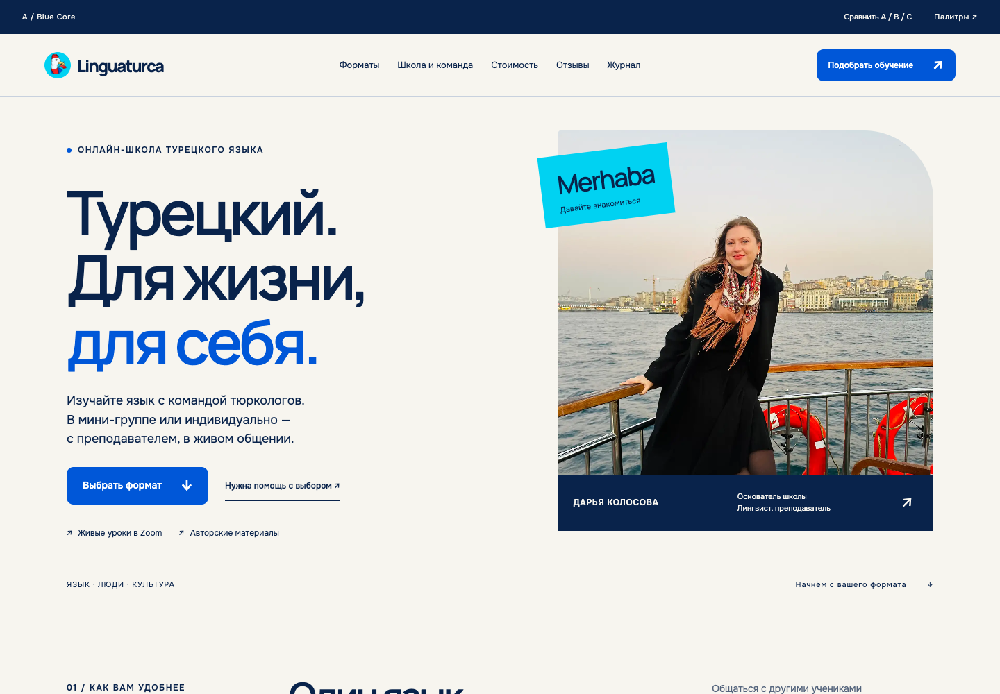

Blue Core
Главный кандидат · эволюция бренда

Синий логотипа ведёт заголовки и действия. Navy вместо зелёного. Тёплая бумага сохраняет человеческий характер.
Сильная сторона: самая прямая связь с брендом.
Следить: оставить достаточно бумаги и фотографии, не расширять синие поверхности без причины.